Choose the File>New menu item to create a new character. You may also use the "New" toolbar button just below the menu bar.
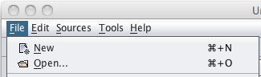
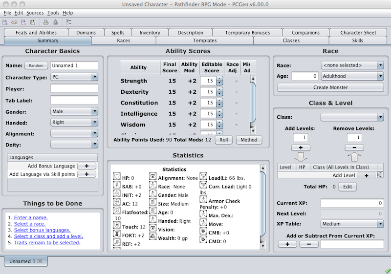
A quick review of this tab shows the following areas containing related information: Character Basics , Ability Scores , Race , Class & Level , and Things to be Done areas all contain fields for entering various data, some more related than others. The first thing we need to do though is to take a quick look at the Things to be Done pane. Note this area and what it currently contains. We'll come back in a bit.
The first things we're going to do is enter the new character's ability scores, and there are a couple of ways to do this.
The first, and the quickest way to get you started right now is to simply enter the ability scopres directly into the avaiable fields, which are editable. Click inside each field in turn and, deleting the existing number, type the new ability score.
The second way to enter ability scores into PCGen is to have PCGen generate them for you. To do this you first have to set the roll method by clicking the Method button and selcting which method you wish to use. Then you will click the Roll button. You can click the roll button as often as you desire until you get a set of numbers that you like.
Next we'll enter a name for your new character and, as with ability scores, there are two ways to enter a name.
The first, and, again as with ability scores, the method we will use here is to simply enter the new character's name directly into the Name field. Click on the field and enter your character's name.
The second method of adding a name is to use PCGen's random name generator.

Before we call up the random name generator you will need to make sure the Gender pull-down menu correctly identifies your character's gender. Once that is done you will click on the Random button next to the name field.
Once the name generator window is up you select the Category and Catalog from which the name will be drawn and then click the Generate button. A name will appear in the generator's Name field. If you do not like the name that cmes up simply click the Generate button until one shows up that you like and then click Ok .
PCGen's random name generator has a good selection of names, of both fantasy and historical origin.
Once you've entered a character name you might as well enter names into the Player and Tab Label fields. The tab label is used if you wish the tab for your character to be designated with something other than your character's name.
Before we move to the next step take a look at the Things to be Done pane. . . . Did you notice that "Enter a Name" is now missing? This is one of the most useful blocks of information on the Summary Tab when creating a character. Remember it.
Now we move to selecting a race.
The quickest way to select a race is to do so from the Race pull-down menu on the Summary Tab . The races on this menu are listed with the PC races first to simplify your selection. To select a race you pull-down to the desired race and let go of the menu. The race will automatically be selected after clicking in any other data field. upon triggering the selection any racial bonuses to the ability scores will automatically be added.
There is, of course, another way to select a race and this is on the Race Tab .
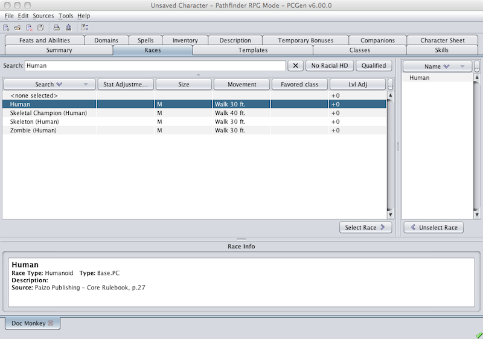
Selecting a race on the Race Tab is a little more difficult than the quick method but is still fairly simple. The left pane lists all races contained in the currently loaded data sets and if the data sets include bestiaries this list can get very long. Its fortunate then that the Race Tab has, as most of tabs, a Search function.
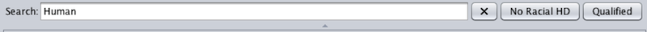
Enter the name of the race you are interested in. Note that as you type the name in the list of races begins to change. PCGen does its search actively as you type, saving time for you, the user. Once the character race that you are looking for appears you click on the Select Race > button and the selected race will be placed in the right pane.
Moving back to the Summary Tab , take a look at the Things to be Done pane. If your new character has a high enough intelligence you will see the message "Select Bonus Languages". If not, feel free to jump to the next step.
Just above the Things to be Done pane you wll find the Languages pane. Click on the "Add Bonus Language" + button.
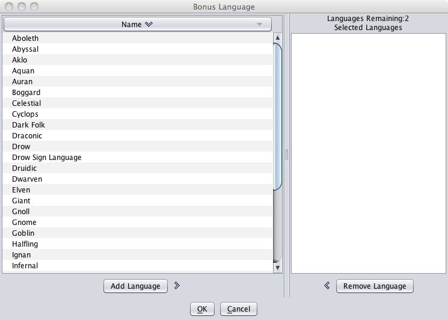
You can find how many bonus language slots you have available by looking above the right pane. To select a bonus language you click on the desired language in the left pane and then click on the Add Language > button. This will move the selected language to the right pane and reduce the avialable language slots by one.
Repeat this process until you are out of bonus language slots.
Its time to once again take a look and see what's next on our list of Things to be Done .
Now, at last, its time to select your new characters Class!
As with race selection, there are two ways to select a class. We will start with the quick method.
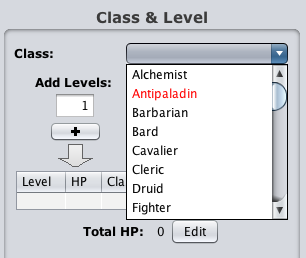
Clicking on the Class drop-down menu in the Class & Level section of the Summary Tab presents a list of available classes. Scroll through the list and select the desired class. You will note that some of these classes appear in red text. This is an indication that the classes have inherent prerequisites that your new character does not meet. If the restricted class is a base PC class it will likely have an alignment requirement so if you have not selected an alignment yet you can do so at this time by clicking on the Alignment drop-down located on the left side of the Summary Tab above the Language pane.
Once you've selected an alignment you can go back to the Class drop-down and select a class for your character. After selecting the class you will make sure that the Add Levels text field has a "1" in it and then click on the + button. You will next see this warning:
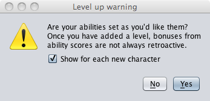
It is important to note that many gameModes lock in the intelligence score bonus at 1st level so before you select your first class level you want to make sure that your ability scores are acceptable. In the case of the sample character, as he is human and we are using the Pathfinder gameMode, he gets to select an ability score bonus. So we'll click the No button and then take detour from Class selection and take a look at the Feats & Abilities Tab . to do this click on the Ability Bonus Remain to be Selected in the Things to be Done pane. (Ah ha! a new bit of usability for the PCGen GUI! Thats right! The items in this pane are hot links to the tab where the relevant selections are to be made!)
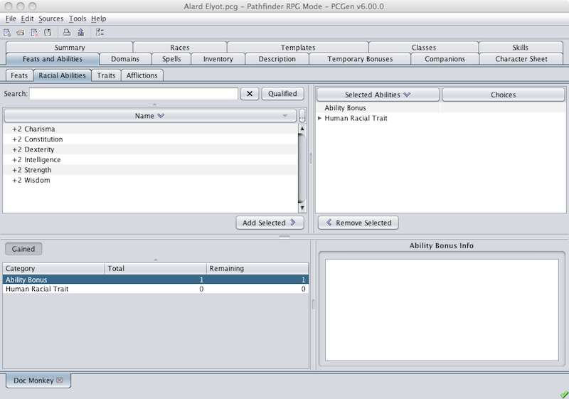
You will note that PCGen has changed to the Feats & Abilities Tab and activated the Racial Abilities Sub-Tab . The available ability bonuses are displayed in the left pane while the right pane displays the ability categories Ability Bonus and Human Racial Traits . If you click on the Human Racial Traits in the right pane the abilities listed in the left pane change. These abilities are the "Human Racial Traits" that the character has. For now you can ignore these. Click on the Ability Bonus entry in the right pane and the original abilities bonuses reappear in the left pane. Looking at the lower-left pane you will see the same two ability categories. You will also see a set of two numbers, one pair for each ability category. The first number represents the number of abilities of that category available to the character and the second number is the number of ability selections left. For our human you can see tht he has one ability bonus granted and that he has that one still to select. So the next thing we do is select one.
This is accomplished by clicking on the ability bonus desired and then clicking on the Add Selected > button and the selected ability bonus appears in the right pane beneath the Ability Bonus category.
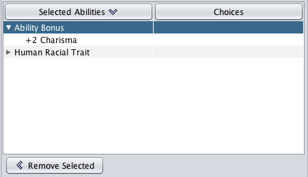
It's time to return to the Summary Tab and the selection of a class for our new character.
Move back to the Summary Tab by clicking on its tab just below the Toolbar . Once there click on the Class drop-down menu and select the desired class. When the warning dialog appears click the Yes button. Next a dialog box will pop up, asking you to select a free set of clothing.
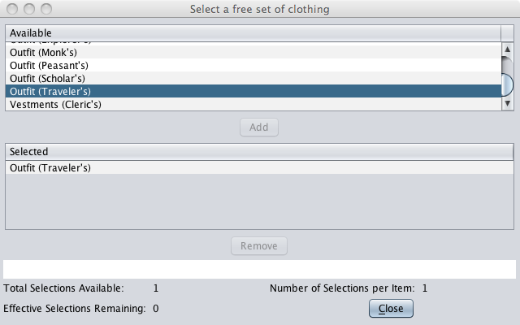
Scroll through the list of clothing and select the desired set. Then click on the Add button and then the Close button.
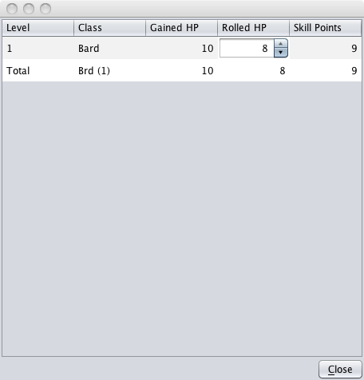
The next dialog that pops up shows the class taken, the hit points gained, the hit points rolled, and the skill points granted. Click the Close button and the window will close.
This is as good a time as any to go over a few things concerning the Things to be Done pane.
- As stated before the items listed in this pane are Hot Links that will take you to the tab/sub-tab where the relevant selections are to be made. If the selection to be made is located on the Summary Tab , PCgen will highlight the relevant pane on the Summary Tab .
- These items are NOT listed in the order of priority. They can be taken care of in any order desired. Of course there are some options that will be taken that might benefit from other options, but with the sheer number of options available variety of effects, there really is no way to definitively determine which item should be handled before any other.
Reviewing the items listed in the Things to be Done pane I am going to jump to the Favored Class remain to be selected item. As before, click on the item. What follows is a sequence of views in which the Favored Class and subsequent options are selected. Note the progression of "Total" and "Remaining" selections in the lower-left pane.
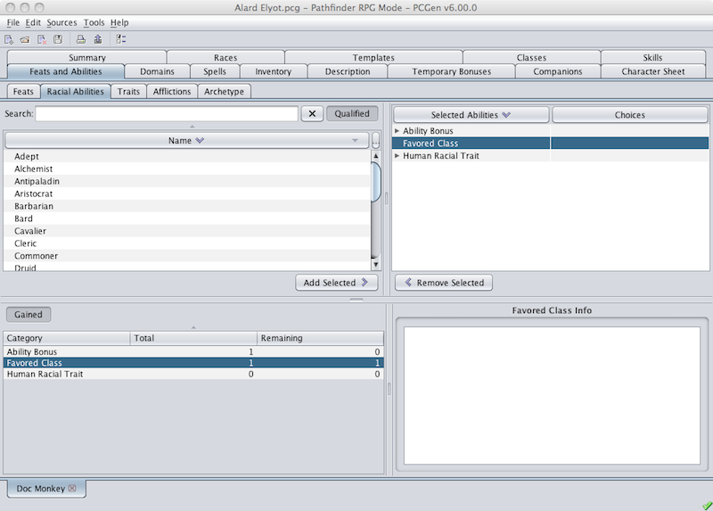
In the Pathfinder RPG gamemode a character receives a bonus each time he takes a level in his Favored Class . So we will scroll through the list of classes and double-click the new character's Favored Class .
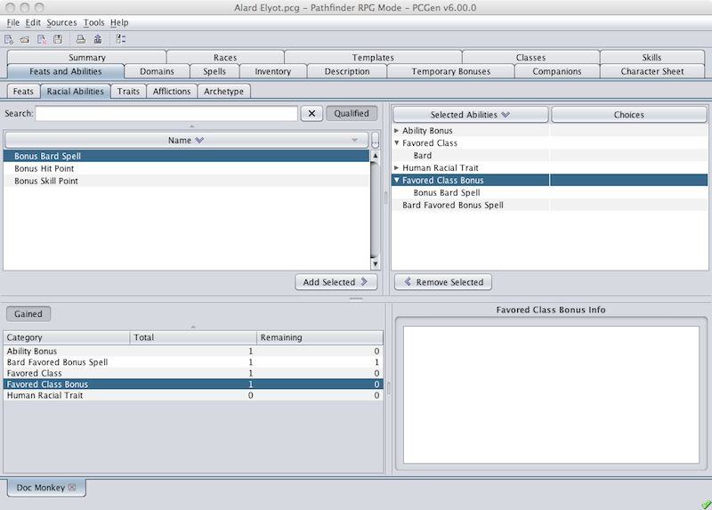
For this option the Qualified button has been activated to remove the ineligible options. What is left are three bonuses. Double-click the character's desired bonus.
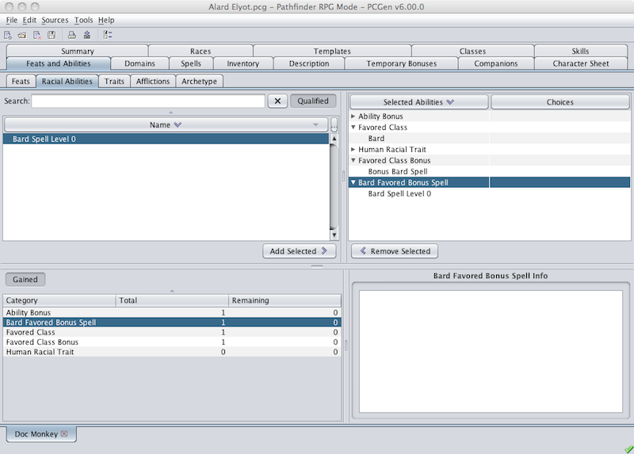
This is the deepest this particular class' Favored Class bonuses go so we will now return to the Summary Tab and to the Skill selections.
Back on the Summary Tab we look once again at the Things to be Done pane and the next thing on the list is Skill points remain to be spent . Click on the Hot Link and we'll zip right over to the Skills Tab .
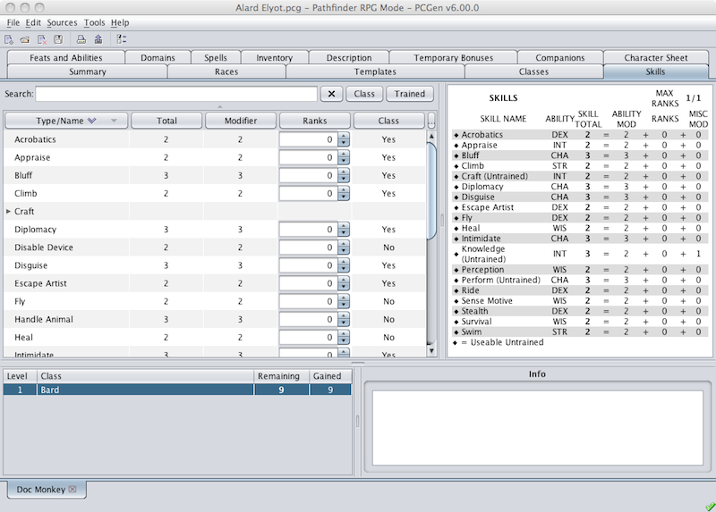
Your new character will have a number of skill points to spend, a number dependent on the class selected and the character's intelligence bonus. The number of points available can be found in the lower-left pane where, as in the Feats & Abilities Tab , you will find the skill points "Gained" and "Remaining" listed by level. You can take spend one skill point per skill rank with a limit of one point per level taken. To spend a skill point you will find the skill you wish to spend the point on and then click the up "Arrow". Note that each class has skills that are considered "Class" skills with the rest being "Non-class" skills. In the Pathfinder RPG gameMode the cost of skills are the same whether class or non-class while the 3.5e gamemode the class skills cost one point and the non-class skills cost two points.
After spending all available skill points we can go back to the Summary Tab .
Back on the Summary Tab we look once again at the Things to be Done pane and the next item on the list is Feat remain to be selected . Click on the Hot Link and we'll zip back to the Feats & Abilities Tab .
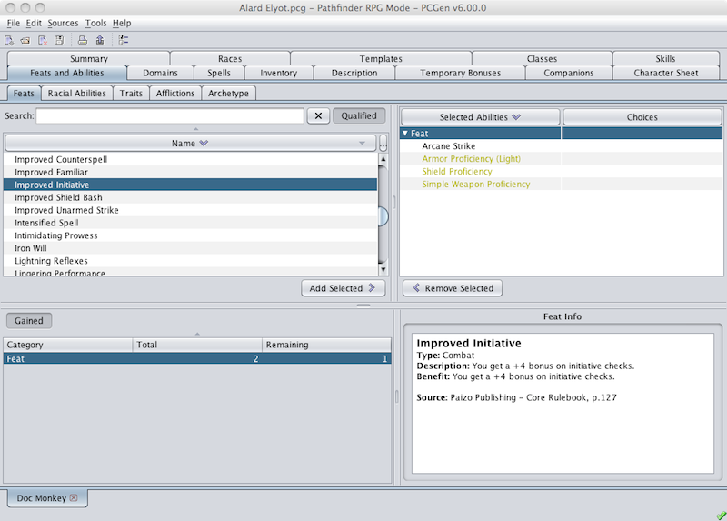
This is our third trip to the Feats & Abilities Tab so you should be familiar with what you'll see here. The lower-left pane shows that the character has a total of 2 feats selections available with only one left to make. Review of the right pane shows there are three feats appearing in yellow text. These are feats that have been added automatically. These are generally added as class or racial features. Arcane Strike is included in black text and represents the first of two feat selections. Pick your desired feats and double-click on them to add them to the character.
Now that the feats have been selected and added to your character let's go back to the Summary Tab .
Examining the Things to be Done pane shows us two items left; Traits and Spells . Though not unique to the Pathfinder setting, traits are not common in the other gameModes distributed by PCGen and even in the Pathfinder setting they are optional. PCGen is preset to grant PC's 2 trait points but if you set out create an NPC PCGen will not grant these points. Click on Traits remain to be Selected and we'll go over how we add traits, or opt out of using traits.
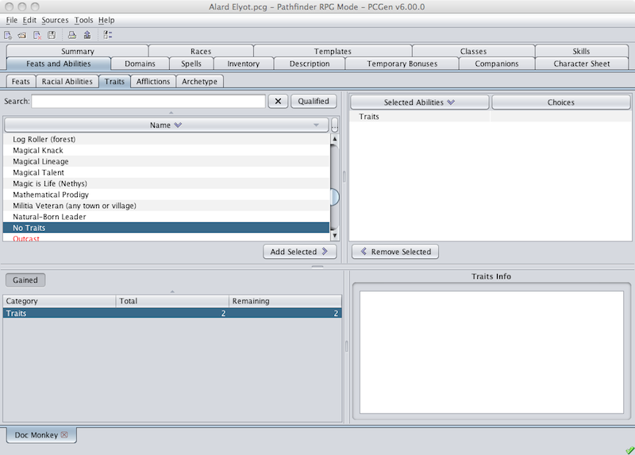
You will note that we are back to the Feats & Abilities Tab so you should be familiar with how to add your selections to your character. As noted above, traits are optional. If you choose not to use traits you simply find the No Traits item and add it to your character. If you wish to use traits, feel free to scroll through the list and pick those of interest and add them to your character. Remember that you can activate the Qualified button to shorten the list. Also be aware that as you make selections some traits will become unavailable. Clicking once on a trait will present the description and benefits in the lower-right pane so you can browse through them prior to making your final selections.
Once you have made your final selection navigate back to the Summary Tab .
The last item listed in the Things to be Done pane is Spell remain to be selected . Click on the hot link and off we go for a spell!
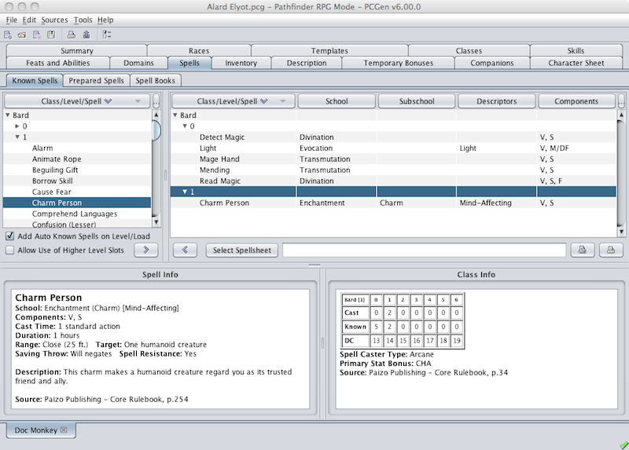
On the Spell Tab you will note that there are three sub-tabs, the Known Spells , the Prepared Spells , and the Spell Books sub-tabs. We will look at the Known Spells sub-tab first.
-
Known Spells Sub-Tab
The Known Spells sub-tab (shown above) has four panes. The upper-left pane will display the spells available to the character, based upon the data sets loaded. The upper-right pane is where the characters known spells will be displayed. The lower-right pane displays a table that identifies the number of spells known, for spellcasters that do not use spellbooks, and the number of spells castable per day for the character. The lower-left pane will display the spell information for the spell selected by clicking on it in either the left or right upper panes.
To add a spell to the list of Known Spells you select the desired spell in the left pane and then click the > button. The desired spell will be added to the right pane. Note that spellcasters that do not have to memorize spells will only be allowed to add as many spells as is indicated in the lower-right pane as "Known" by spell level.
-
Prepared Spells Sub-Tab
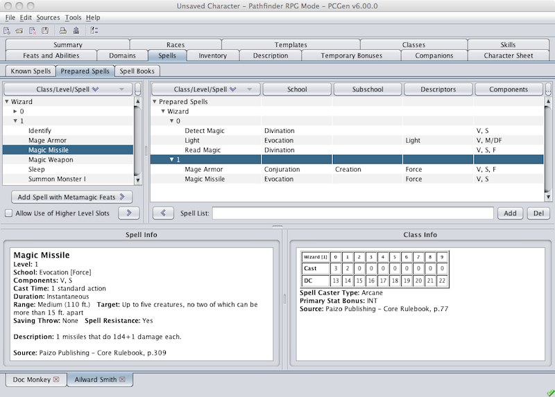
The Prepared Spells sub-tab has four panes and is useful only to those spellcasters that must memorize or pray for spells. The upper-left pane will display the spells known by the character. The upper-right pane is where the character's prepared spells will be displayed. The lower-right pane displays a table that identifies the number of spells castable per day for the character. The lower-left pane will display the spell information for the spell selected by clicking on it in either the left or right upper panes.
To add a spell to the list of Prepared Spells you select the desired spell in the left pane and then click the > button. The desired spell will be added to the right pane. Note that spellcasters that memorize spells will only be allowed to add as many spells as is indicated in the lower-right pane as can be "Cast" by spell level.
-
Spells Books Sub-Tab
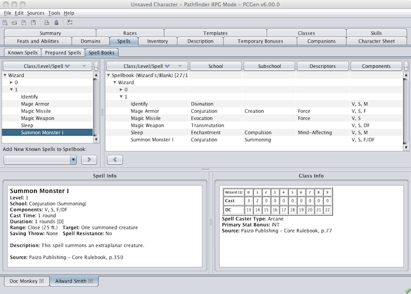
The Spellbooks sub-tab has four panes and is useful only to spellcasters that use spellbooks. The upper-left pane will display the spells available to the character. The upper-right pane is where the character's spellbooks, and the spells contained within, are displayed. The lower-right pane displays a table that identifies the number of spells castable per day for the character, and the lower-left pane will display the spell information for the spell selected by clicking on it in either the left or right upper panes.
To add a spell to a Spellbook you click on the target spellbook in the right-pane and then select the desired spell in the left pane and then clicking the > button. The desired spell will be added to the target spellbooke. The number of spells that can be placed in a spellbook is limited by the nu ber of pages in the book. Specifically, each spell will take up a number of pages equal to one page per spell-level, with a minimum of one page. Spellbooks generally contain no more than one-hundred pages but there is no limit to the number of spellbooks a spellcaster can have.
We are done with the spells so ws now move back to the Summary Tab and examine the Things to be Done pane you will note that we are done. There are no items left to take care of! . . . Ok, its not quite that easy.
Though the Things to be Done pane is now empty there are a number of tabs left that we have yet visit. For some of these there is nothing on them for the character I've been working on, but mostly because they are player driven and not so much because the character choices take you there as is the case with the tabs we have visted so far. These tabs will be covered in the next section.
There are classes that can be selected that, as a class feature, are granted access to divine powers through specific Domains . When such a class is taken the Things to be Done pane on the Summary Tab will include a link to this tab.
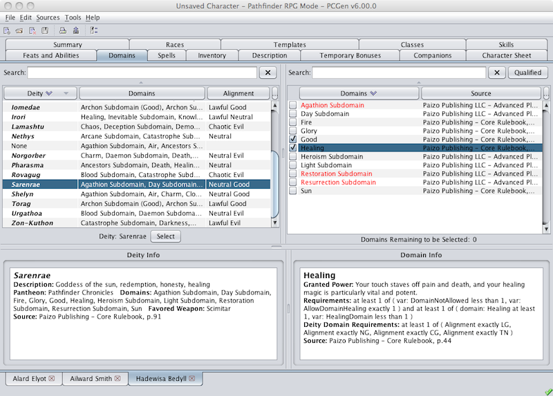
Like many of the other tabs, the Domains Tab is separated into four panes.The upper-left pane lists all deities available in the loaded data sets. The upper-right pane will remain empty until a deity is selected, and then it will list the Domains which the selected Deity can grant to their clerics. The lower panes will display the descriptions of the deity and domain selected in the panes above them.
To select a domain you must first select a Deity from the left pane. You will then select the desired domain(s) from the right pane. The PCGen team has included a deity named None for those who do not wish to restrict their domain choices by the deity choosen. Selecting None will make all base domains available. Continue selecting domains untl all available slots are taken.
A number of classes grant "Companions" to the character that takes those classes. Whether it is the Paladin's Special Mount , the Wizards Familiar , or the Druids Animal Companion . If you have taken one of these classes, or any of the other classes that grant a Companion, you will need to visit the Companion Tab .

The Companions Tab is separated into two panes. The left pane lists the different categories of "Companions" that are available to your character. Next to each category is a pair of numbers within a set of parenthesis. The first number is the number of that type f comapnion that the current character has and the second number shows how many are allowed to the current character. Note that simple Mounts and Followers have no limit within PCGen. The sample character currently has no Familiar but is allowed one. To begin the process of adding a Familiar, all we need to do is click on the companion type and then on the Creae New button. The following window pops up.

The Select a Race window presents a list of races to choose your companion from. In this case, the race of the character's familiar. Select the desired race and click on the Create <Companion Type> button. In this case it will be the Create Familiar button. Once this button has been clicked the next window will pop up, though the Select a Race window will remain open.
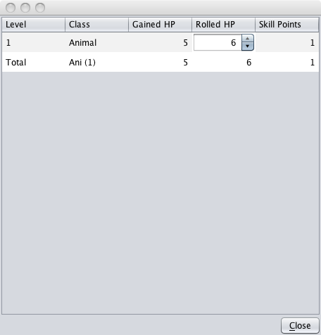
The next window to pop up and displays the new companion's class, gained hit points, rolled hit points, and skill points granted to the new companion.
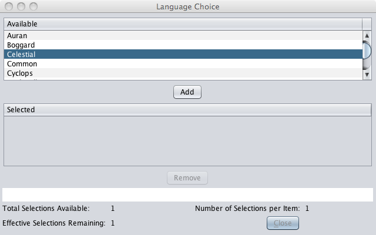
Some companions have additional selection to be made, thus the Raven, taken as a familiar, will be granted a free language. Make te appropriat selections and move on.
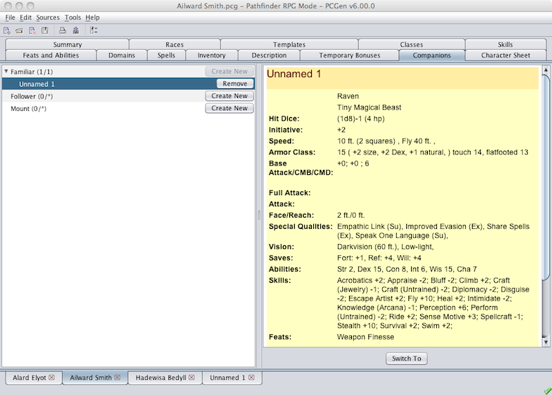
Finally, the new companion's basic information will appear in the right pane of the Companions Tab . Note that the new companion also has its own Main Tab with the label "Unnamed". At this point you can move to the companions tab and follow the links on the Things to be Done pane on the Summary Tab .
This completes the walkthough of the steps driven by Character Options . The next section covers those tabs and character creation steps driven by Character Play options.